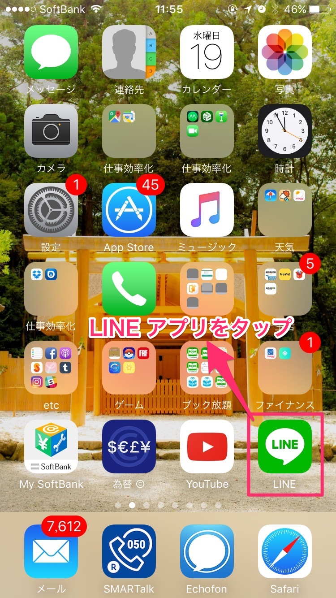
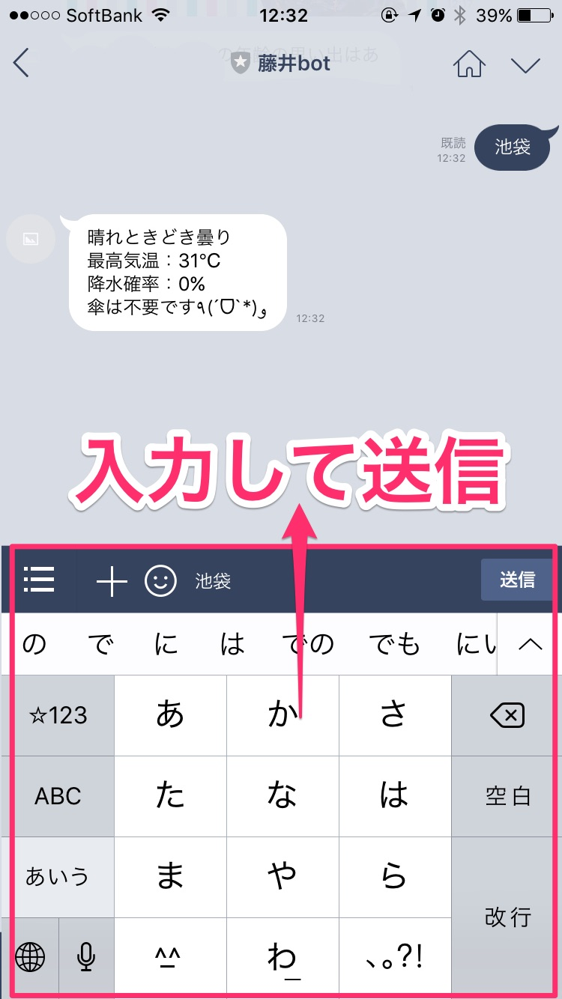

藤井BOT
-藤井とは果たして何者なのか-LINEで年齢を指定すると、
その年齢に該当する思い出話が返ってくるBOT
(ﾟｰﾟ*)｡oO（あいつまた訳わかんねぇくだらないもの作ってんな）
そんな事を思った皆様！
ちょっと話を聞いてくれ！
2016/04/08 LINE社がBOT API利用を先着1万名に無償提供のニュース
各種IT系ニュースサイトやSNSでも話題になり即日様々なBOTがでてきた
BOT例
- 外部API系・・・天気、ニュース、株価などを返す
- 画像系・・・ネコやアイドル、ネタ系画像を返す
- AI会話・・・AI女子高生と会話
- 乗換案内・・・from駅 to駅で最適な乗換情報を返す(LINE BOT AWARDS賞金100万円)
私は思いました
それBOTでやる必要ある？
専用アプリや専用WEBサービスがある上で、
わざわざLINE BOTで行う有効性とは。
LINE BOTで天気を調べる手順



- アプリ起動
- ユーザー一覧から対象のBOTを探してタップ
- 知りたい情報を入力
- 期待する情報を得る
ゴールまでの手順が長すぎる
天気予報アプリの方が当然使いやすい
果たして個人で作るLINE BOTで専用アプリ、サービスより優位性を持つアイディアは何か
考える
（´-`）.｡oO（・・・・・・・・・）
思いつかない!!!!!!!!
LINE BOTである必要性、優位性があるものが思いつかない!!!!!!
ならば！
一瞬だけの利用でも使ってくれるものは何か
それでいて人の役に立つものか何か
idobataにレプラの独身者達が集うサロンがあると小耳に挟む
合コンも終わりに近づき連絡先交換タイムで意を決して
「LINE交換しましょう」
「私、LINEやってないんで」
「私、スマホ持ってないんで」
「お母さんに知らない人と交換しちゃダメって言われてるんで」
なんて言われて交換できずに言われてきたと思います
私もその一人です
どうしたらLINE交換できるか
「LINE交換しましょう」
↓
「LINE BOT作ったんですよ」
これの方が興味を持ってくれるんじゃないでしょうか！？
レプラボへの公開に先立ち友人に当BOTプログラムを提供したところ

大成功したようでした
以上です(｀_´)ゞ
仕組み